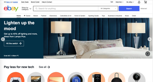
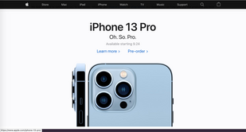

Design Principles Document
Andraya Goff
Rule of Thirds
Ebay
https://www.ebay.com
The image shown has the picture placed off center to give a natural feel instead of a rigid one. If you divide the picture into three squares, you can see that the image rests where the lines cross each other.
White Space and Clean Design
Apple
https://www.apple.com/
Sometimes – when you are trying to announce or describe something – less is more. The picture within the image alone with a few words to describe it is enough to tell the viewer about the product the company is selling.
PARC: Proximity
Betty Crocker
https://www.bettycrocker.com/The piece of the site shown here shows different recipes for each day of the week. This group is placed close into a group to keep it separate from everything else within the site.